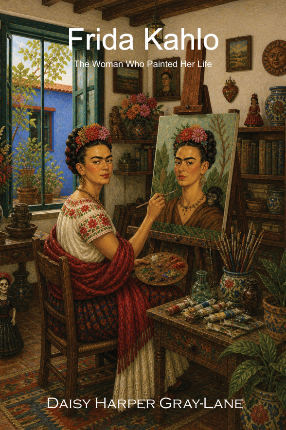

The Woman Who Painted Her Life
Art & Resilience
From the Brilliant Women, Remarkable Stories series
Get the book
Your Amazon store
The life of an artist who turned pain into vibrant, unforgettable beauty.
Frida was born in Coyoacán, a colorful neighborhood of Mexico City. Her father, a German photographer, encouraged her curiosity, taking her on long walks and teaching her to use a camera and notice the small details of the world.
At six, Frida fell ill with polio and spent nine months in bed. The illness left her with a slight limp, but she refused to let it stop her. She climbed trees, played sports, and dreamed of becoming a doctor.
At fifteen, Frida joined one of the best schools in Mexico, where she was one of only thirty-five girls among two thousand students. She studied science and dreamed of medicine, all while soaking up Mexico's rich culture and politics.
At eighteen, a terrible bus accident left Frida with severe injuries. She spent months recovering in bed. To pass the time, her parents had a special easel built so she could paint while lying down. A mirror above her bed let her paint the only person always there: herself.
Frida married Diego Rivera, the famous Mexican muralist. Their relationship was passionate and complicated, full of love, art, and adventure. Together they became one of the most celebrated artistic couples of the 20th century.
Frida painted her dreams, her pain, and her culture. She wore traditional Mexican dresses and embroidered blouses, becoming a symbol of pride in indigenous heritage. Her paintings were unlike anything anyone had seen before.
One of Frida's paintings, "The Frame," was bought by the Louvre — making her the first Mexican artist to have a work in this legendary museum. Even Pablo Picasso wrote that her talent surpassed his own.
Too ill to walk, Frida arrived at her own exhibition in an ambulance, carried in on her four-poster bed. She greeted guests from her bed, surrounded by her paintings — turning even her illness into art.
Frida's paintings hang in museums around the world today. Her courage, her colors, and her honesty inspire artists, dreamers, and anyone who has ever felt different. She showed us that there is beauty in being yourself, exactly as you are.